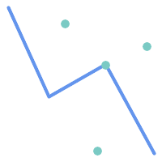
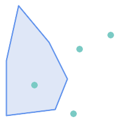
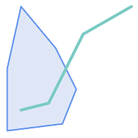
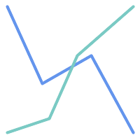

名前
ST_Crosses — 二つのジオメトリが内部に共有ポイントを持ち、かつそれだけにならないようになっているかテストします。
概要
boolean ST_Crosses(geometry g1, geometry g2);
説明
二つのジオメトリを比較して、「空間的にクロスしている」場合にTRUEを返します。ジオメトリは内部の共通点をいくつか持っていますが、全て持っているわけではありません。ジオメトリの内部の共通部分は空ではなく、二つのジオメトリの最大図形次元より小さくなければなりません。二つのジオメトリの共通部分は、入力ジオメトリのいずれとも同じであってはなりません。クロスでないならFALSEを返します。クロスの関係は対称ですが無反射です。
数学用語では: ST_Crosses(A, B) ⇔ (dim( Int(A) ⋂ Int(B) ) < max( dim( Int(A) ), dim( Int(B) ) )) ∧ (A ⋂ B ≠ A) ∧ (A ⋂ B ≠ B)
DE-9IMインタセクション行列が次の通り合致するとジオメトリはクロスしています。
Point/Line, Point/Area, Line/Areaの場合には
T*T******Line/Point, Area/Point, Area/Lineの場合には
T*****T**Line/Lineの場合には
0********点/点の状況や面/面の状況では、結果は
FALSEです
![[注記]](../images/note.png) | |
OpenGIS Simple Feature Specificationでは、この述語はPoint/Line, Point/Area, Line/Line, Line/Areaの場合についてのみ定義されています。JTS/GEOSでは、Line/Point, Area/Point, Area/Lineについて拡張しています。これによって関係が対称になっています。 |
| |
この関数の呼び出しによって、ジオメトリで使用可能なインデックスを使用するバウンディングボックスの比較が自動的に行われます。 |
![[重要]](../images/important.png) | |
Enhanced: 3.0.0 |
 このメソッドはOGC Simple Features Implementation Specification for SQL 1.1の実装です。
このメソッドはOGC Simple Features Implementation Specification for SQL 1.1の実装です。
s2.1.13.3
このメソッドはSQL/MM仕様の実装です。
SQL-MM 3: 5.1.29
例
次の場合には全てTRUEを返します。

| 
|

| 
|
roads (道路)とhighways (高速道路)の2つのテーブルを持っている場面を考えます。
CREATE TABLE roads ( id serial NOT NULL, geom geometry, CONSTRAINT roads_pkey PRIMARY KEY (road_id) );
|
CREATE TABLE highways ( id serial NOT NULL, the_gem geometry, CONSTRAINT roads_pkey PRIMARY KEY (road_id) );
|
次のようなクエリを使って、highwayとクロスするroadsのリストを決定します。
SELECT roads.id FROM roads, highways WHERE ST_Crosses(roads.geom, highways.geom);